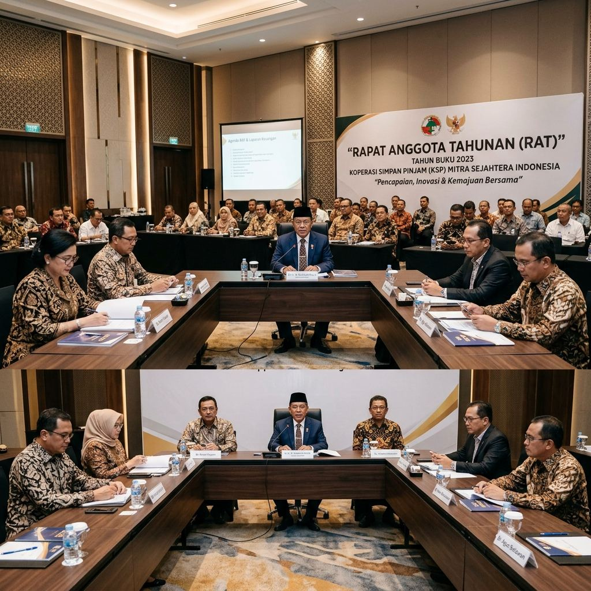

RATRAT KOPANA Tahun Buku 2025 Berlangsung Sukses dan Penuh Semangat Kebersamaan
Rapat Anggota Tahunan KOPANA tahun buku 2025 telah dilaksanakan dengan lancar. Seluruh laporan keuangan dan pertanggungjawaban pengurus diterima dengan baik oleh seluruh anggota yang hadir.
Baca Selengkapnya